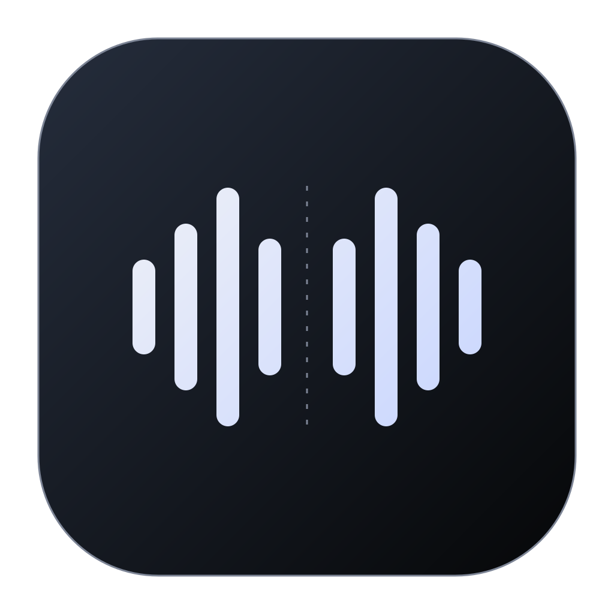
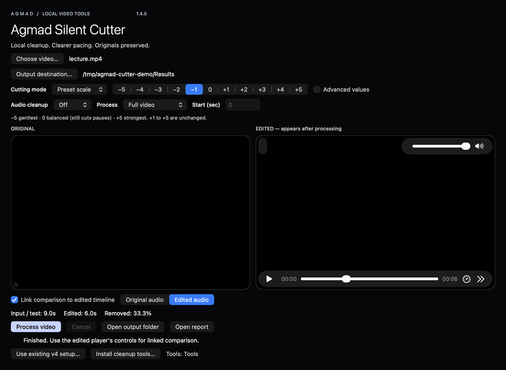

تنزيل نسخة Mac
Apple Silicon · macOS 14+ · واجهة إنجليزية
احذف الوقفات، وخفّف تشتيت الصوت، وراجع النتيجة قبل مشاركتها. مسار بسيط على جهازك يحافظ على الفيديو الأصلي.
الإصدار المرشح 1.4.0
Apple Silicon · macOS 14+ · واجهة إنجليزية
Intel / AMD بنظام 64-bit · واجهة عربية
يحتاج الإعداد الأول إلى الإنترنت. المعالجة اليومية على جهازك. فصل الموسيقى اختياري.
مقياس من −5 إلى +5، ووضع مخصص بقيم محدودة. ابدأ بهدوء واختبار 30 ثانية.
بدون تنظيف، إزالة الضوضاء، أو إزالة الموسيقى. يُعاد استخدام الصوت المنظّف عند تغيير مستوى القص فقط.
تشغيل مرتبط للأصل والنتيجة، وإحصائيات القص وسجل لكل عملية.

واجهة Mac الفعلية باستخدام فيديو اختبار اصطناعي. تتبع واجهة Windows الألوان نفسها مع أزرار عربية.
لا يرفع مسار المعالجة ملفاتك لخدمة خارجية. ينزّل الإعداد الصريح أدوات ومكتبات ونماذج اختيارية. لا يتضمن التطبيق تحليلات استخدام أو نظام حسابات.
لا. اختر بدون تنظيف للتسجيل الواضح، وإزالة الضوضاء للخلفية المستمرة. فصل الموسيقى اختياري وأثقل وقد يترك آثارًا مسموعة. تشوه الرياح الشديد قد لا يمكن إصلاحه.
أكد صاحب المشروع عمل نسختي Mac وWindows 1.3. يُفحص تنسيق 1.4.0 الجديد عبر بناء Mac الأصلي واختبارات الواجهة والمعالجة المشتركة. تبقى مراجعة المظهر الجديد على Windows والتوافق مع أجهزة متعددة فحوصًا منفصلة.
تحتاج نسخة Mac إلى Apple Silicon وmacOS 14+ وHomebrew للإعداد الأول. تتضمن Windows مكتبات Python وQt. توقيع Mac محلي، ولا يوجد توقيع ناشر Windows. اتبع دليل النسخة دون تعطيل حماية النظام عمومًا.
دليل التثبيت وحل المشكلات موجود داخل كل حزمة.
المستودع قيد التجهيز للنشر
من أجمد. أداة محلية عملية، بحدود واضحة.